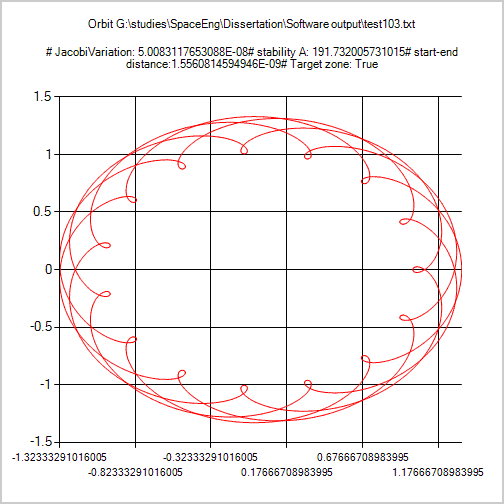
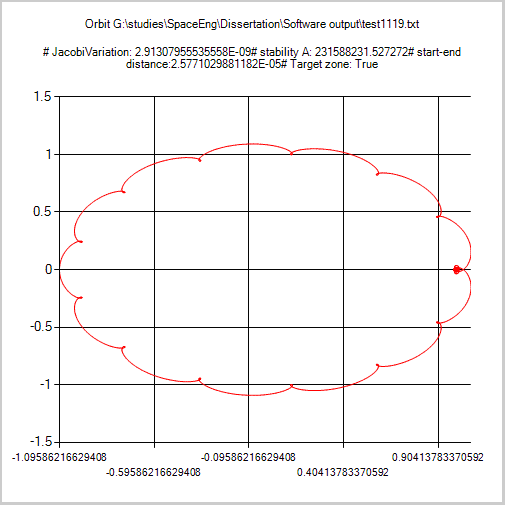
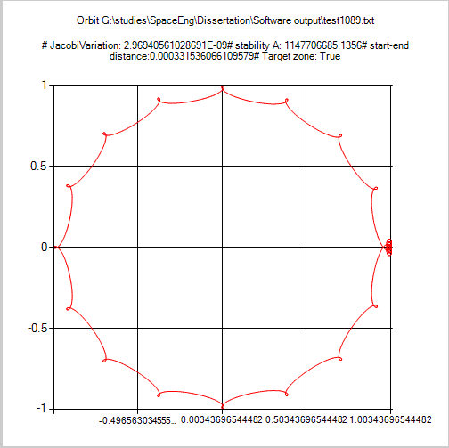
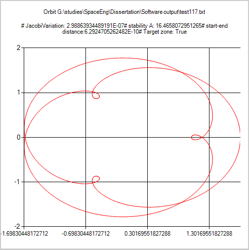
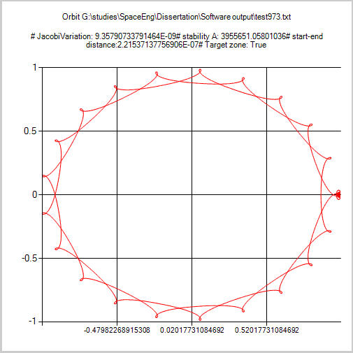
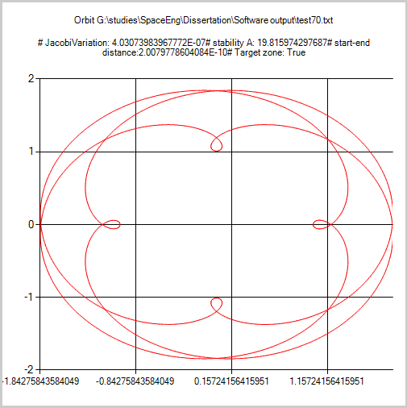
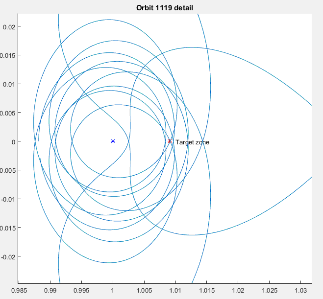
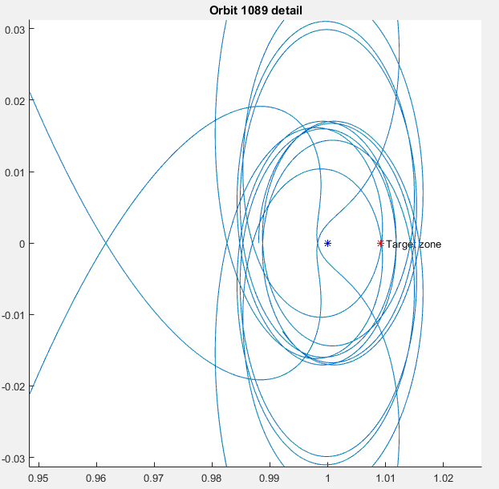

Semester 1:
- Mission Design and Analysis
- Space
System Design
- Space Remote Sensing
- Space Avionics
Semester 2:
- Space Structures and Mechanisms
- Advanced Guidance, Navigation and
Control
- Space Environment and Protection
- Launch Vehicles and
Propulsion
The topic was "Survey of Periodic Orbits for Solar Coronagraph Missions". The main task was to simulate the orbits in the Rastrepo & Russel database (2018) in order to find those suitable for solar coronagraph missions using the Eckersley/Kemble methods, as patented by Airbus. This method uses a planet as an occulting body to obtain a better image than with a coronagraph. The idea was first proposed for use with the Moon as an occulting body, but as this created significant complications in the computations (the target zone changed in distance and orientation relative to the Moon as it and the Earth progressed through their respective orbits), the Earth was selected as a primary goal and the Moon as a secondary. Due to long debugging times, large avoidable with some more experience as many of the problems came down to a discrepancy in the last digits of μ, there was only time for the Sun-Earth system to be explored. I am, however, very interested in continuing the project for the Earth-Moon system upon graduation. The simulation used the Circular Restricted Three Body Problem running with Microsoft's Open Solver for Differential Equations library for the RKF45 integrator, but it was also implemented in MATLAB for prototyping with its respective integrator, thus cross-validating the results in individual tests; the final batch processing of the approximately 175.000 orbits was done in the C# version for the improved performance and natively provided multithreading optimization. A total of about 3500 orbits of various shapes were found that pass through the target zones, with over 30 passing at least 4 times per year. Bellow is a sample of the various orbits (thos in red are from the software I developped, those in blue are details from Matlab):

The database that resulted from this effort can be found here, and 1000-point records of one period of each can be downloaded here.